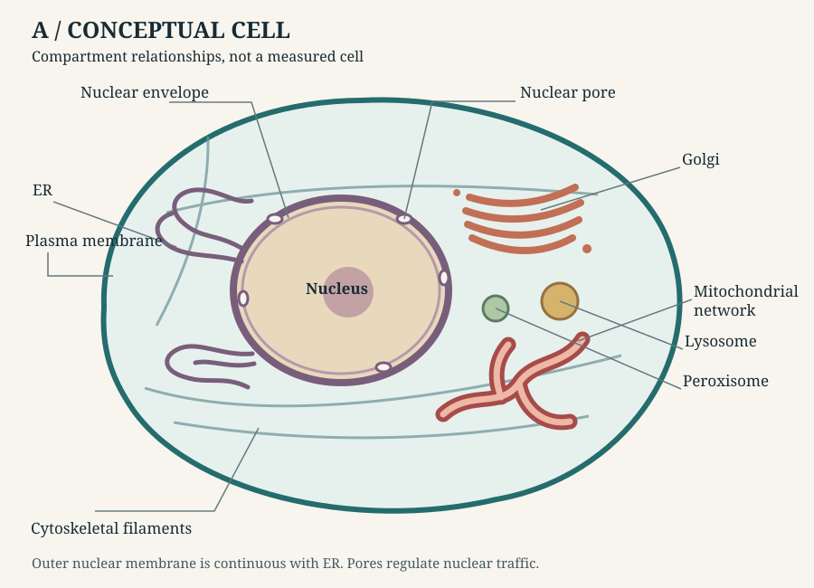
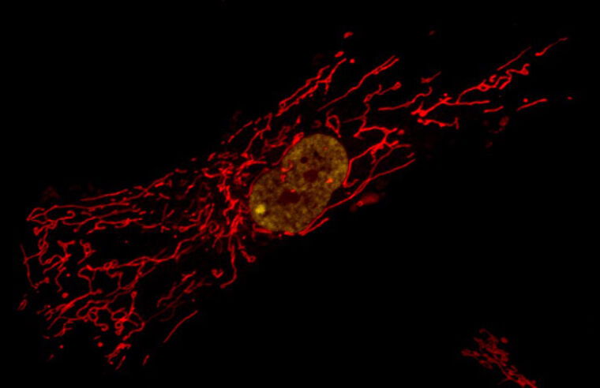
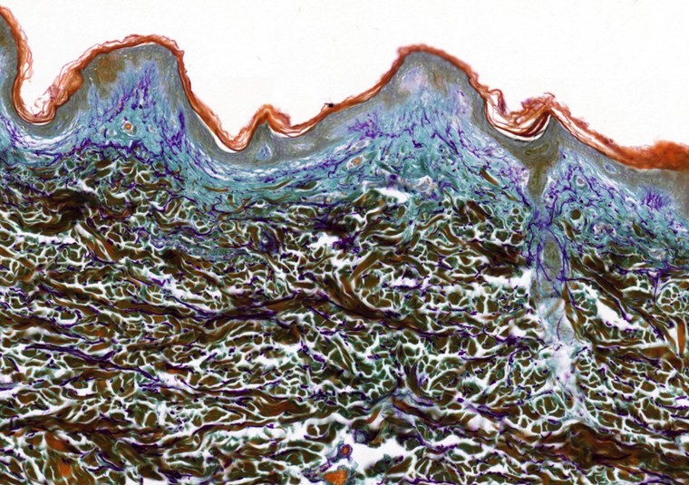

Chapter 01 / cells and tissues
From cell compartments to tissue
A conceptual map helps us discuss compartments. A microscope image records selected signals from a particular specimen. The images show different specimens; the drawing is a conceptual model.
A. Conceptual cutaway

Enlarge cell diagram
B. Actual confocal micrograph

● Nucleus · yellow stain● Mitochondria · red stain
C. Actual tissue section: human skin

Reading the evidence. The fluorescent colours identify selected stains, not ordinary visible colours. The fibroblast image does not show every organelle or establish the complete cell boundary; it is neither an intact tissue section nor a three-dimensional reconstruction. No depth or physical dimensions can be inferred from it. The skin section is a separate specimen; its stained colours are not natural living-tissue colours. The drawing is not traced or reconstructed from either image.
Structure references: nuclear envelope and pores; endoplasmic reticulum; cell compartmentalization.